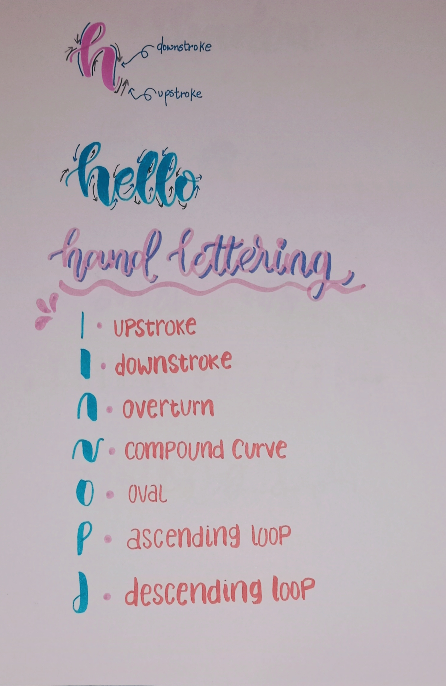
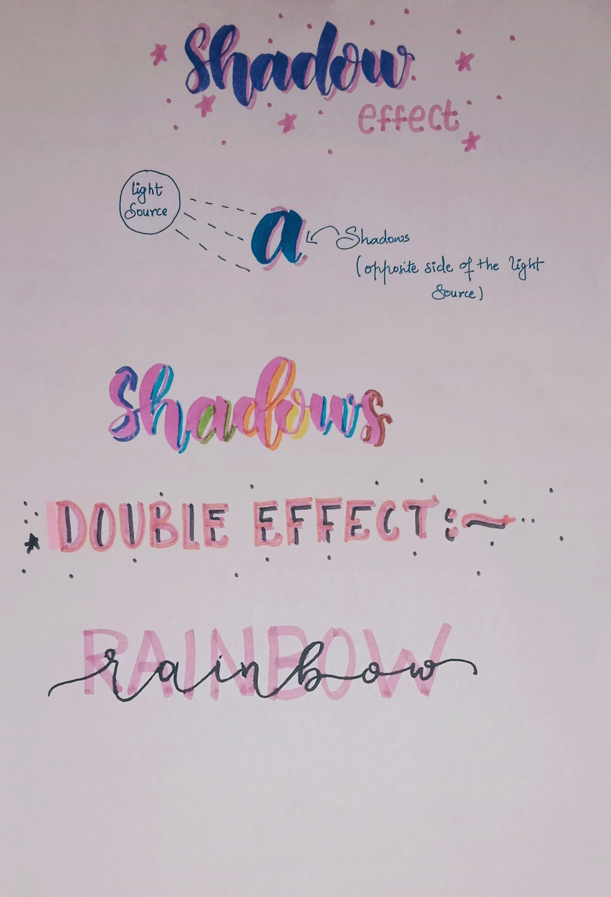

- consistent spacing
- evoking different methods
- focus on the pressure while writting
Upstrokes and downstrokes
When you’re writing and forming letters,
every time your pen goes up on the page is called an upstroke.
Upstrokes are done with light pressure and should be thinner

Lettering curves
- UPSTROKE
- DOWNSTROKE
- OVERTURN
- COMPOUND CURVE
- OVAL
- ASCENDING LOOP
- DESCENDING LOOP

SHADOW EFFECT
The source of light
Shadows cannot exist without light. Where there is light, there are shadows.
This is why it is necessary for us to know where the source of light is when shadowing.
This is the first thing that you should decide before putting the shadows.
And yes, you saw it right. It's you who decide where the light source should be.
The basic rule:
The shadows should appear on the opposite side of the light source.
